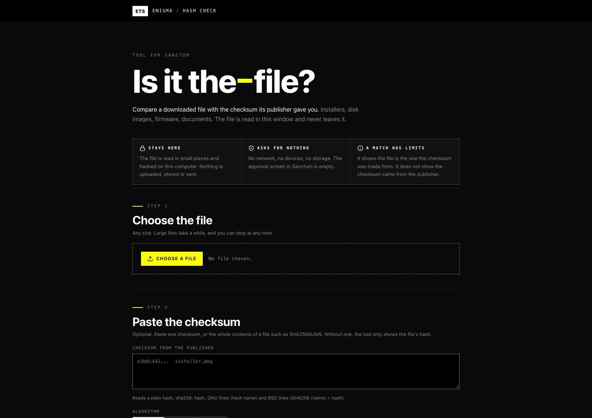
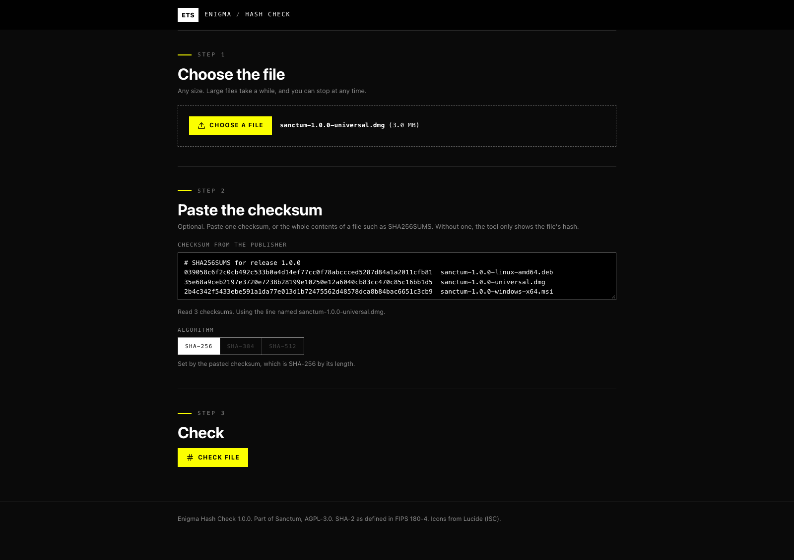
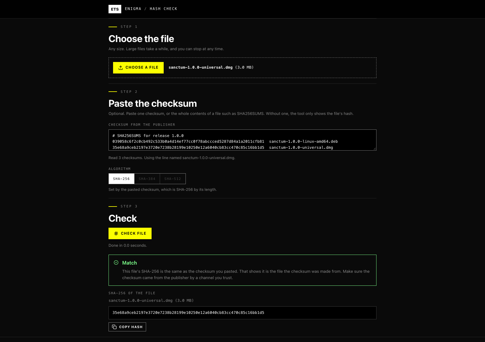
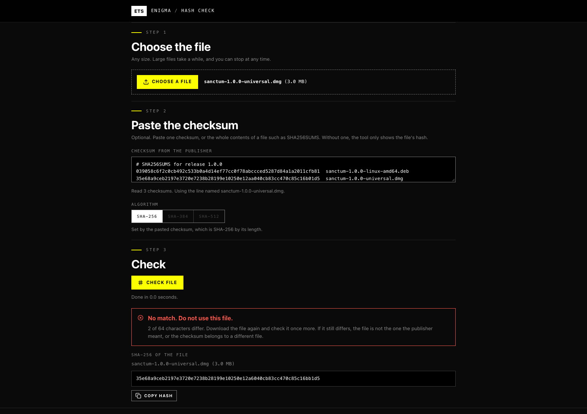

Check a file against the checksum its publisher gave you. Runs offline and asks for no access.
Hashes a file you choose with SHA-256, SHA-384 or SHA-512 and compares it with a checksum you paste. It reads a plain hash, GNU and BSD checksum lines and whole SHA256SUMS files, and picks the line that matches the file's name. Large files are read in pieces with a progress bar. Everything happens inside the tool window: nothing is stored, uploaded or sent. A match shows the file is the one the checksum was made from, not that the checksum came from the publisher. The tool asks Sanctum for no access at all.
Asks for no special access
Published by Enigma Technologies Solutions · Source · AGPL-3.0-only
Install opens Sanctum, which shows this tool and what it asks for, then waits for your click. Nothing is installed from the page itself. Sanctum not installed? Get Sanctum first.
Verified means the publisher is who it says and the bytes have not changed. It does not mean safe. A signature never grants access: every tool still starts with nothing approved, and you approve each capability yourself.
Screenshots




What is new
1.0.0 2026-10-29
Added. Hash a file with SHA-256, SHA-384 or SHA-512 and compare it with a pasted checksum.
Added. Reads plain hashes, GNU and BSD checksum lines and whole SHA256SUMS files, and picks the line that matches the file name.
Added. Files of any size are read in pieces, with a progress bar and a Stop button.
Added. MD5 and SHA-1 sums are recognised and refused, never reported as a match.
Added. First release signed by Enigma Technologies Solutions.
Manual
What it does
A checksum is a short fingerprint of a file. Publishers list one next to a download so you can tell whether the file you received is the file they made. Hash Check reads your file, works out its fingerprint on your computer and compares it with the one you paste.
What it asks Sanctum for
Nothing. The approval screen is empty: no storage, no network, no smart card and no device access. The file is read in this window and is never uploaded.
Check a file
Press Choose a file and pick the download.
Paste the checksum from the publisher's page into the box. You can paste a single hash, or the whole contents of a file such as SHA256SUMS. If you skip this step the tool only shows the file's hash.
Press Check file. A large file shows a progress bar, and Stop ends the check at any time.
The result says Match or No match. After a mismatch the tool shows how many characters differ. Download the file again and check it once more before you decide the file is wrong.
Which checksums it reads
A plain hash, in capitals or lower case.
sha256: followed by a hash.
GNU lines, as sha256sum writes them: hash name.
BSD lines: SHA256 (name) = hash.
A hash grouped with spaces or colons, as some pages show it.
When you paste a list, the line whose name matches the chosen file is used. If no line carries that name, paste only the line you need.
The algorithm is set by the length of the pasted hash: 64 characters is SHA-256, 96 is SHA-384 and 128 is SHA-512. Without a checksum, choose the algorithm yourself. SHA-256 is what most publishers use.
Good to know
MD5 and SHA-1 sums are recognised and not compared. They are no longer safe to rely on. Ask the publisher for a SHA-256 or SHA-512.
A match shows that the file is the one the checksum was made from. It does not show that the checksum came from the publisher. If an attacker can change the download page, they can change the checksum too. Prefer a checksum you got from a different channel, or one the publisher has signed.
Nothing is written to disk. Copy hash puts the file's hash on the clipboard, and nothing else does.